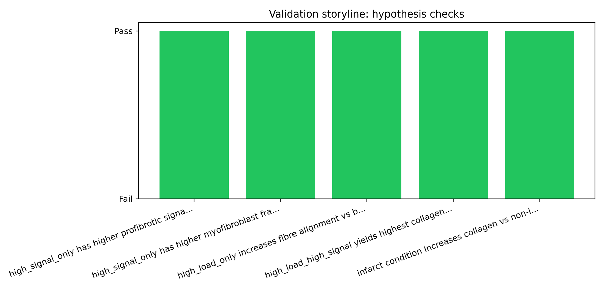
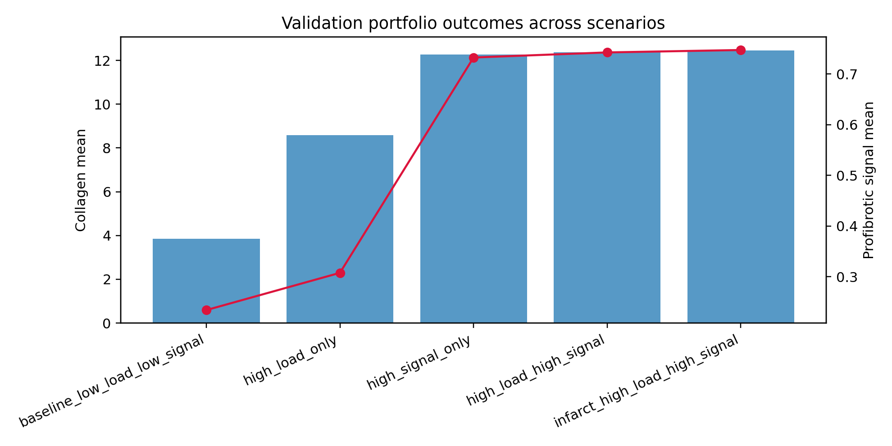
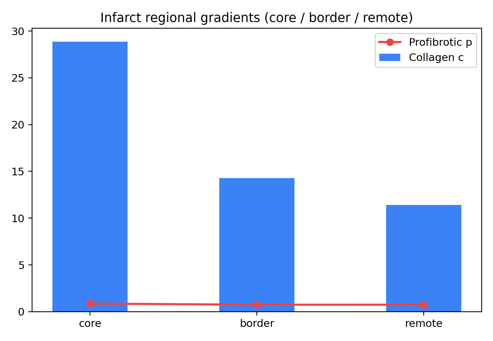
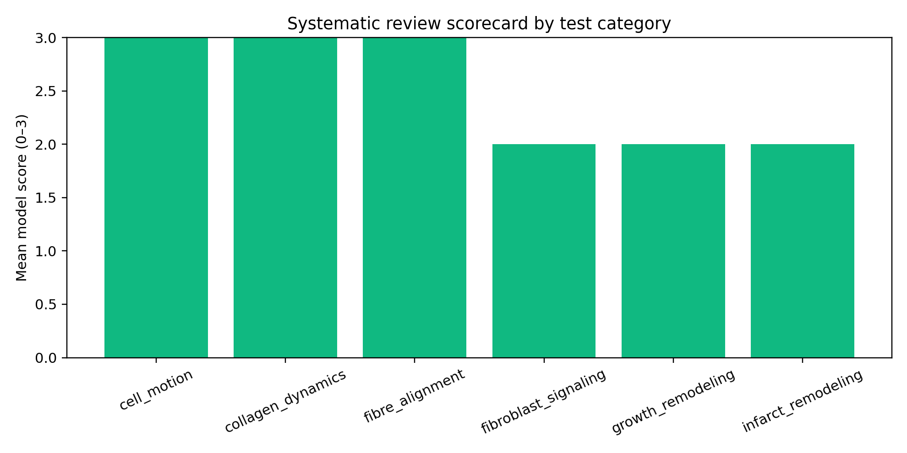

Test outcomes
- test_mesh.py: pass
- test_deposition.py: pass (radial symmetry + phenotype boost)
- test_fibre_update.py: pass
- test_fem_patch.py: pass
- test_nonlinear_solver.py: pass (Ogden Dirichlet)
- Verification: patch test, deposition symmetry, fibre convergence, nonlinear Dirichlet sanity constraints.
- Validation: plausibility trends under stretch + profibrotic signaling interaction scenarios (portfolio script).
Infarct region panel (core/border/remote)
| Region | Collagen c | Profibrotic p |
|---|---|---|
| Core | 28.850 | 0.862 |
| Border zone | 14.295 | 0.741 |
| Remote | 11.401 | 0.742 |
Scenario: infarct_high_load_high_signal
Validation portfolio
Validation Portfolio
Checks passed: 5/5
Scenario outcomes
- baseline_low_load_low_signal: c=3.856, p=0.234, myo=0.000, ac_align_x=0.904 - high_load_only: c=8.589, p=0.308, myo=0.800, ac_align_x=0.913 - high_signal_only: c=12.259, p=0.732, myo=1.000, ac_align_x=0.901 - high_load_high_signal: c=12.377, p=0.742, myo=1.000, ac_align_x=0.912 - infarct_high_load_high_signal: c=12.446, p=0.747, myo=1.000, ac_align_x=0.916Checks
- [PASS] high_signal_only has higher profibrotic signal than baseline - [PASS] high_signal_only has higher myofibroblast fraction than baseline - [PASS] high_load_only increases fibre alignment vs baseline - [PASS] high_load_high_signal yields highest collagen among non-infarct scenarios - [PASS] infarct condition increases collagen vs non-infarct high_load_high_signalSystematic literature-linked test catalog
Total tests: 80
- Mean score: 2.4
- Score 3: 32
- Score 2: 48
- Score 1: 0
- Score 0: 0
| ID | PMID | Category | Score | Evidence-linked test title |
|---|---|---|---|---|
| T001 | 37569674 | infarct_remodeling | 2/3 | New Insights into the Reparative Angiogenesis after Myocardial Infarction. |
| T002 | 37371059 | collagen_dynamics | 3/3 | Phospholipid Encapsulation of an Anti-Fibrotic Endopeptide to Enhance Cellular Uptake and Myocardial Retention. |
| T003 | 36826549 | collagen_dynamics | 3/3 | Ciclopirox Inhibition of eIF5A Hypusination Attenuates Fibroblast Activation and Cardiac Fibrosis. |
| T004 | 34643044 | collagen_dynamics | 3/3 | MicroRNA-146b-5p promotes atrial fibrosis in atrial fibrillation by repressing TIMP4. |
| T005 | 34568449 | infarct_remodeling | 2/3 | Does the Heart Want What It Wants? A Case for Self-Adapting, Mechano-Sensitive Therapies After Infarction. |
| T006 | 34023353 | infarct_remodeling | 2/3 | Dimethyl fumarate preserves left ventricular infarct integrity following myocardial infarction via modulation of cardiac macrophage and fibroblast oxidative metabolism. |
| T007 | 32611237 | collagen_dynamics | 3/3 | Glutamyl-Prolyl-tRNA Synthetase Regulates Proline-Rich Pro-Fibrotic Protein Synthesis During Cardiac Fibrosis. |
| T008 | 29631164 | infarct_remodeling | 2/3 | Injectable hyaluronic acid based microrods provide local micromechanical and biochemical cues to attenuate cardiac fibrosis after myocardial infarction. |
| T009 | 29030341 | infarct_remodeling | 2/3 | Macrophage overexpression of matrix metalloproteinase-9 in aged mice improves diastolic physiology and cardiac wound healing after myocardial infarction. |
| T010 | 28404615 | growth_remodeling | 2/3 | Myeloperoxidase Mediates Postischemic Arrhythmogenic Ventricular Remodeling. |
| T011 | 27619160 | collagen_dynamics | 3/3 | The role of cardiac fibroblasts in post-myocardial heart tissue repair. |
| T012 | 26601107 | collagen_dynamics | 3/3 | Computational Approaches to Understanding the Role of Fibroblast-Myocyte Interactions in Cardiac Arrhythmogenesis. |
| T013 | 26383724 | infarct_remodeling | 2/3 | A Novel Collagen Matricryptin Reduces Left Ventricular Dilation Post-Myocardial Infarction by Promoting Scar Formation and Angiogenesis. |
| T014 | 41680862 | fibroblast_signaling | 2/3 | PRIP/PLCL deficiency activates PI3K-AKT-YAP signaling and promotes organ fibrosis. |
| T015 | 41568549 | growth_remodeling | 2/3 | Signal Recognition Granule Receptor Beta Subunit Promotes Arrhythmogenic Remodeling in the Heart Failure Mice. |
| T016 | 41544467 | infarct_remodeling | 2/3 | Single-nucleus analysis reveals Dengzhan Shengmai capsule prevents cardiac fibrosis after myocardial infarction in rat by targeting Ltbp2(+) fibroblast subset. |
| T017 | 40788381 | fibroblast_signaling | 2/3 | HSPA9/HMGB1 regulates myocardial fibrosis in atrial fibrillation via TGF-β1/Smad pathway and autophagy. |
| T018 | 40688308 | fibroblast_signaling | 2/3 | TIMP1 regulation of cardiac fibroblast proliferation via the TGF-β/Smad pathway in an in vitro model of atrial fibrillation. |
| T019 | 40538115 | collagen_dynamics | 3/3 | Computational modelling of cardiac fibroblast signalling reveals a key role for Ca(2+) in driving atrial fibrillation-associated fibrosis. |
| T020 | 40019607 | fibroblast_signaling | 2/3 | SFRP4 Knockdown Attenuates Dsg2-Deficient Arrhythmogenic Cardiomyopathy by Down-Regulating TGF-β and Smad3. |
Full catalog: outputs/systematic_test_catalog.json
Publication-grade validation figures
These figures summarize model generation and validation status.




03 — Validation and Sanity Checks
1. Linear patch test: Affine displacement field under homogeneous material yields near-uniform strain. 2. Nonlinear Ogden Dirichlet test: nonlinear solver preserves imposed boundary displacements and returns finite solution. 3. Uniaxial stretch sanity: right-edge displacement increases mean \(\varepsilon_{xx}\). 4. Deposition kernel: single fixed cell gives radially decaying collagen map. 5. Phenotype switch + deposition boost: high-cue fibroblasts switch to myofibroblasts and deposit more collagen. 6. Fibre normalization: \(\|a\|=1\) after each update. 7. Nonnegativity: \(c\ge 0\). 8. Run stability: no NaN in displacement, collagen, fibres over long-horizon runs (target 600 steps).
04 — Systematic Improvement Review for Validation Fidelity
This review synthesizes literature-grounded ideas to improve agreement between FibroTwin predictions and experimentally observed fibroblast/fibrosis behavior.
Scope
- Improve model ability to reproduce validation tests for: - mechanosensitive fibroblast activation, - infarct core/border/remote collagen patterns, - load–signal interaction effects, - fiber/collagen alignment dynamics.Literature-informed improvement themes
1) Fibroblast signaling network depth (Saucerman-style)
Rationale: Cardiac fibroblast behavior is highly context dependent and regulated by interacting pathways (e.g., TGF-β, AngII, ROS, mechano-signaling crosstalk).Current model status: reduced single profibrotic proxy `p`.
Suggested upgrade: small ODE network module: - latent nodes: `Smad`, `MAPK/ERK`, `Calcineurin`, `ROS`; - outputs: `myofibro_switch_rate`, `collagen_synthesis_rate`, `degradation_inhibition`.
Expected benefit: improves stimulus-specific responses and nonlinearity in validation matrix.
2) Explicit cytokine transport fields
Rationale: Current TGF-β/AngII are scenario-level inputs; local secretion and diffusion are not explicit.Suggested upgrade: PDE fields \[ \partial_t c_k = D_k\nabla^2 c_k + S_k(\text{cells,damage,load}) - \lambda_k c_k \] for `k in {TGFβ, chemokine, MMP/TIMP proxy}`.
Expected benefit: spatial gradients and border-zone behavior become more realistic and testable.
3) Constituent-specific constrained-mixture turnover
Rationale: Current growth proxy is scalar and does not distinguish collagen cohorts.Suggested upgrade: constrained-mixture style collagen cohorts with deposition time and survival/turnover law.
Expected benefit: better long-horizon remodeling kinetics and hysteresis after perturbation changes.
4) Damage-driven infarct evolution
Rationale: Infarct is currently static mask.Suggested upgrade: dynamic infarct state variables (inflammation, necrotic clearance, provisional matrix maturation).
Expected benefit: improved temporal agreement for infarct healing curves.
5) Calibration and UQ
Rationale: portfolio checks are trend-based, not quantitatively calibrated.Suggested upgrade: - Bayesian / multi-objective calibration on selected PMIDs, - uncertainty intervals for outputs, - VVUQ table per test category.
Expected benefit: publication-quality credibility and reproducible confidence bands.